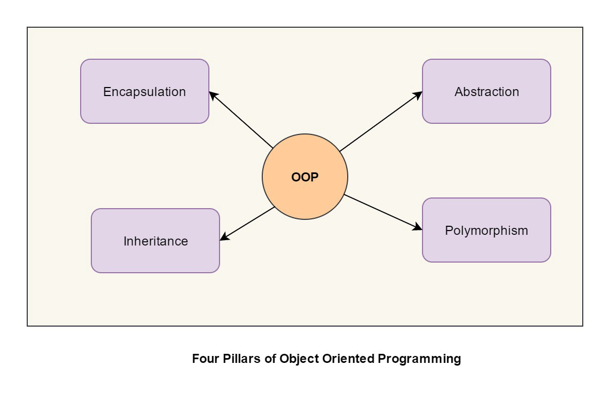

What is Object Oriented Programming?
Object Oriented programming (OOP) is a programming paradigm that relies on the concept of classes and objects. It is used to structure a software program into simple, reusable pieces of code blueprints (usually called classes), which are used to create individual instances of objects. There are many object-oriented programming languages including JavaScript, C++, Java, and Python.
A class is an abstract blueprint used to create more specific, concrete objects. Classes often represent broad categories, like Car or Dog that share attributes. These classes define what attributes an instance of this type will have, like color, but not the value of those attributes for a specific object.
The Four Pillars of Object-oriented Programming
- Inheritance
- Polymorphism
- Abstraction
- Encapsulation
Example image

What is Front-end Web Development?
Front-end web development, also known as client-side development is the practice of producing HTML, CSS and JavaScript for a website or Web Application so that a user can see and interact with them directly. The challenge associated with front end development is that the tools and techniques used to create the front end of a website change constantly and so the developer needs to constantly be aware of how the field is developing.
Key Front End Developers Skills
- HTML - Hypertext Markup Language
- CSS - Cascading Style Sheet
- JavaScript Programming
Example image

What is Human and Computer Interaction
Human-computer interaction (HCI) is a multidisciplinary field of study focusing on the design of computer technology and, in particular, the interaction between humans (the users) and computers. While initially concerned with computers, HCI has since expanded to cover almost all forms of information technology design.
Four Main Components of HCI
- The User
- Task
- Tools/Interface
- Interface devices
- The context
Example image